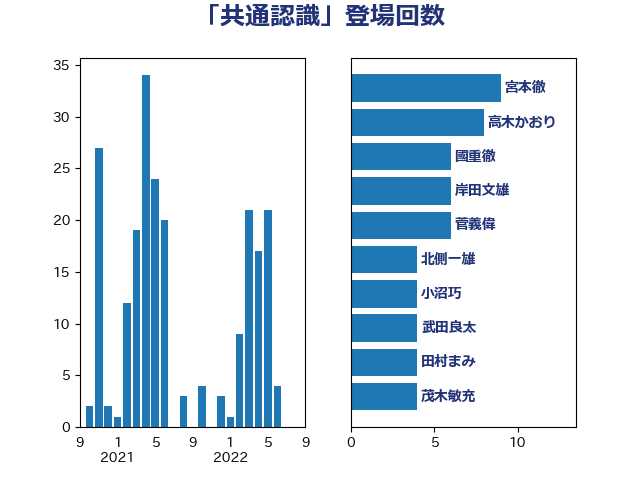

単語「共通認識」

| 宮本徹 | 日本共産党 | 9 回 |
| 高木かおり | 日本維新の会 | 8 回 |
| 國重徹 | 公明党 | 6 回 |
| 岸田文雄 | 自由民主党 | 6 回 |
| 菅義偉 | 自由民主党 | 6 回 |
| 北側一雄 | 公明党 | 4 回 |
| 小沼巧 | 立憲民主党 | 4 回 |
| 武田良太 | 自由民主党 | 4 回 |
| 田村まみ | 国民民主党 | 4 回 |
| 茂木敏充 | 自由民主党 | 4 回 |
| 山下芳生 | 日本共産党 | 3 回 |
| 梅村聡 | 日本維新の会 | 3 回 |
| 津島淳 | 自由民主党 | 3 回 |
| 田村憲久 | 自由民主党 | 3 回 |
| 田村智子 | 日本共産党 | 3 回 |
| 萩生田光一 | 自由民主党 | 3 回 |
| 野田聖子 | 自由民主党 | 3 回 |
| 金子恭之 | 自由民主党 | 3 回 |
| 長友慎治 | 国民民主党 | 3 回 |
| 青柳仁士 | 日本維新の会 | 3 回 |
| 高橋千鶴子 | 日本共産党 | 3 回 |
| 上野通子 | 自由民主党 | 2 回 |
| 加藤勝信 | 自由民主党 | 2 回 |
| 塩村あやか | 立憲民主党 | 2 回 |
| 奥野総一郎 | 立憲民主党 | 2 回 |
| 宮口治子 | 立憲民主党 | 2 回 |
| 小泉進次郎 | 自由民主党 | 2 回 |
| 岡田克也 | 立憲民主党 | 2 回 |
| 岸信夫 | 自由民主党 | 2 回 |
| 平木大作 | 公明党 | 2 回 |
| 徳永久志 | 立憲民主党 | 2 回 |
| 新藤義孝 | 自由民主党 | 2 回 |
| 柳ヶ瀬裕文 | 日本維新の会 | 2 回 |
| 自見はなこ | 自由民主党 | 2 回 |
| 長妻昭 | 立憲民主党 | 2 回 |
| 阿部知子 | 立憲民主党 | 2 回 |
| 青山繁晴 | 自由民主党 | 2 回 |
| 三木亨 | 自由民主党 | 1 回 |
| 中川正春 | 立憲民主党 | 1 回 |
| 伊佐進一 | 公明党 | 1 回 |
| 佐藤啓 | 自由民主党 | 1 回 |
| 務台俊介 | 自由民主党 | 1 回 |
| 古賀友一郎 | 自由民主党 | 1 回 |
| 吉田とも代 | 日本維新の会 | 1 回 |
| 吉良よし子 | 日本共産党 | 1 回 |
| 國場幸之助 | 自由民主党 | 1 回 |
| 塩川鉄也 | 日本共産党 | 1 回 |
| 宮崎政久 | 自由民主党 | 1 回 |
| 小宮山泰子 | 立憲民主党 | 1 回 |
| 小林鷹之 | 自由民主党 | 1 回 |
| 平山佐知子 | 無所属 | 1 回 |
| 掘井健智 | 日本維新の会 | 1 回 |
| 斉藤鉄夫 | 公明党 | 1 回 |
| 末松信介 | 自由民主党 | 1 回 |
| 本村伸子 | 日本共産党 | 1 回 |
| 杉尾秀哉 | 立憲民主党 | 1 回 |
| 杉本和巳 | 日本維新の会 | 1 回 |
| 松沢成文 | 日本維新の会 | 1 回 |
| 松野博一 | 自由民主党 | 1 回 |
| 林芳正 | 自由民主党 | 1 回 |
| 柴田巧 | 日本維新の会 | 1 回 |
| 武井俊輔 | 自由民主党 | 1 回 |
| 浅野哲 | 国民民主党 | 1 回 |
| 浜野喜史 | 国民民主党 | 1 回 |
| 浦野靖人 | 日本維新の会 | 1 回 |
| 渡辺周 | 立憲民主党 | 1 回 |
| 渡辺孝一 | 自由民主党 | 1 回 |
| 牧山ひろえ | 立憲民主党 | 1 回 |
| 玉木雄一郎 | 国民民主党 | 1 回 |
| 甘利明 | 自由民主党 | 1 回 |
| 田島麻衣子 | 立憲民主党 | 1 回 |
| 田嶋要 | 立憲民主党 | 1 回 |
| 田村貴昭 | 日本共産党 | 1 回 |
| 石川大我 | 立憲民主党 | 1 回 |
| 石橋通宏 | 立憲民主党 | 1 回 |
| 礒崎哲史 | 国民民主党 | 1 回 |
| 神津たけし | 立憲民主党 | 1 回 |
| 篠原豪 | 立憲民主党 | 1 回 |
| 菅家一郎 | 自由民主党 | 1 回 |
| 藤田文武 | 日本維新の会 | 1 回 |
| 西村智奈美 | 立憲民主党 | 1 回 |
| 赤羽一嘉 | 公明党 | 1 回 |
| 足立康史 | 日本維新の会 | 1 回 |
| 逢沢一郎 | 自由民主党 | 1 回 |
| 野上浩太郎 | 自由民主党 | 1 回 |
| 鈴木憲和 | 自由民主党 | 1 回 |
| 鈴木貴子 | 自由民主党 | 1 回 |
| 阿部司 | 日本維新の会 | 1 回 |
| 青木一彦 | 自由民主党 | 1 回 |
| 高村正大 | 自由民主党 | 1 回 |